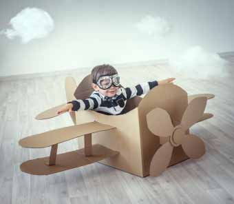

Familierejserne foregår individuelt for jeres familie, derfor bestemmer I, hvornår I vil rejse. Priserne er uden fly til og fra destinationen, alt andet er inkluderet. Når I finder den rejse, der passer jer kontakter I os mht fly - så vil vi søge efter den bedste flyforbindelse til jer.
På vores familierejser er det kun jeres familie, der rejser sammen. Med på rejsen har I jeres egen lokale, engelsktalende rejseleder, der står for det praktiske men som også sikrer, at rejsen bliver en oplevelse både for børnene og de voksne.
I har flere dage uden guide, hvor I kan nyde swimmingpool eller slappe af i jeres eget tempo.
Rejserne tilrettelægges specielt til jeres familie, I bestemmer derfor, hvornår det passer jer at rejse. Derfor er der ikke som udgangspunkt fly med i prisen, idet fly kan variere i pris afhængigt af afrejsetidspunktet.
Kontakt os for at få den bedste pris på fly til og fra destinationen. Når vi vælger fly til jer tager vi højde for, at I rejser med børn.
På vores familierejser er hotellerne nøje udvalgt, så de matcher de fleste familiers ønske om komfort. Hotellerne ligger centralt og har swimmingpool, som de yngste i familien ofte sætter pris på. I kan altid vælge en anden hotelkategori, end den vi har valgt, ligesom I kan ændre i programmet, så det passer til jeres familie.
På vores familierejser er det kun jeres familie, der rejser sammen. Med på rejsen har I jeres egen lokale, engelsktalende rejseleder, der står for det praktiske men som også sikrer, at rejsen bliver en oplevelse både for børnene og de voksne.
I har flere dage uden guide, hvor I kan nyde swimmingpool eller slappe af i jeres eget tempo.
Er du træt af at skulle tilrettelægge det hele selv? Det kan for de fleste familier være rigtigt svært at vælge, hvor lang tid man skal bruge et sted i forhold til et andet - og hvilken strand og by egner sig nu bedst til vores familie. Derfor nyder du godt af vores ekspertise i at rejse med børn og de destinationer, hvor vi sender jeres familie til. Det er jeres garanti for, at I får en god rejse uden bekymringer for om hotelbookingnen nu gik igennem, og om det hotel, I har booket, nu også er så godt, som I forventer.
Vi giver jer tryghed på rejsen, for vi har tilrettelagt det hele for jer. Det program, som vi har på vores hjemmeside, er vores bedste bud på enfamilierejse. Men ikke allle familier er ens, derfor er der plads til, at vi skræddersyer rejsen, så den passer præcis til jeres ønsker og budget.
Det kan ikke være nemmere. Det er bare om, at komme afsted.
Det er vigtigt for os, at I er trygge ved at rejse, og at jeres forventninger til rejsen afstemmes inden afrejse. Derfor byder vi gerne på en kop kaffe eller te, så vi kan høre om, hvad det er, jeres familie ønsker.
Tag gerne børnene med, så begynder rejsen allerede, og hele familien kan glæde sig sammen om den kommende drømmerejser.